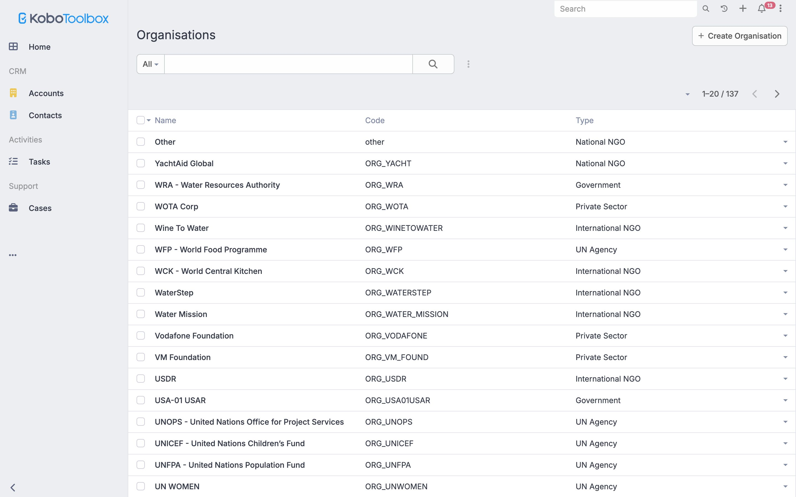
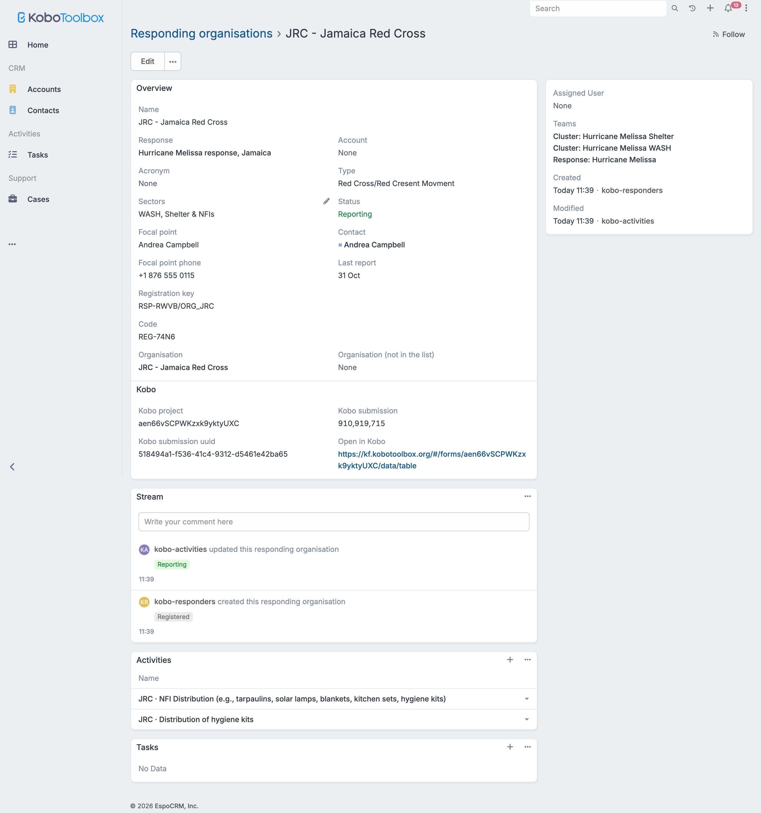
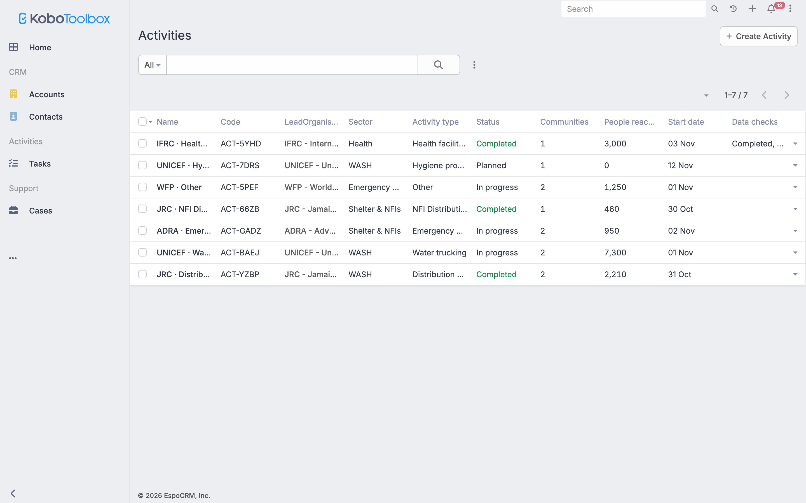
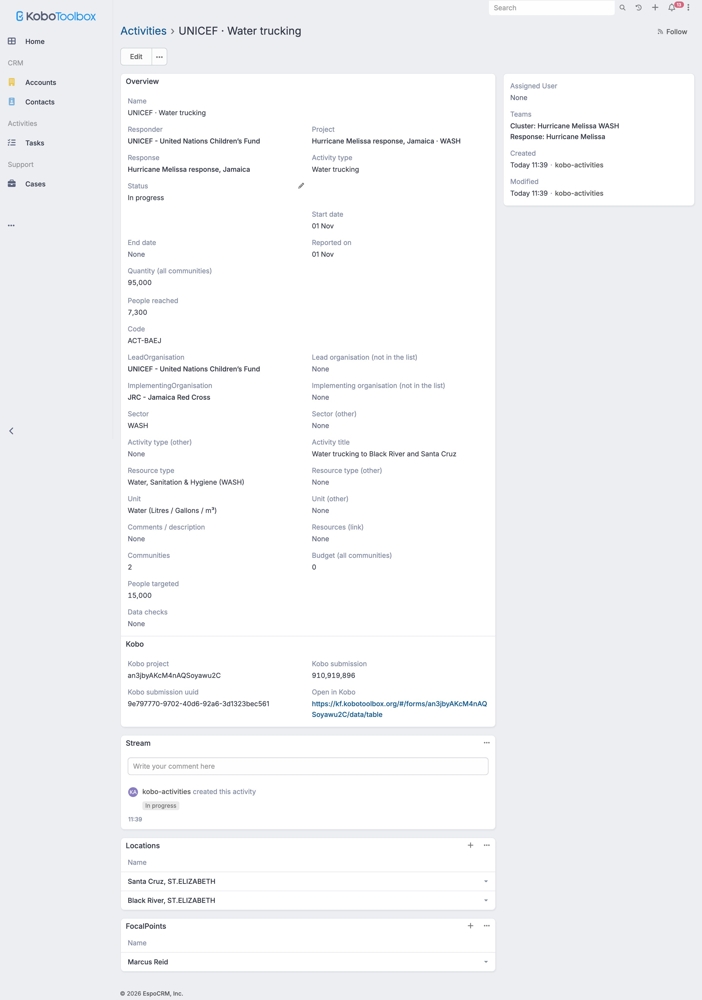
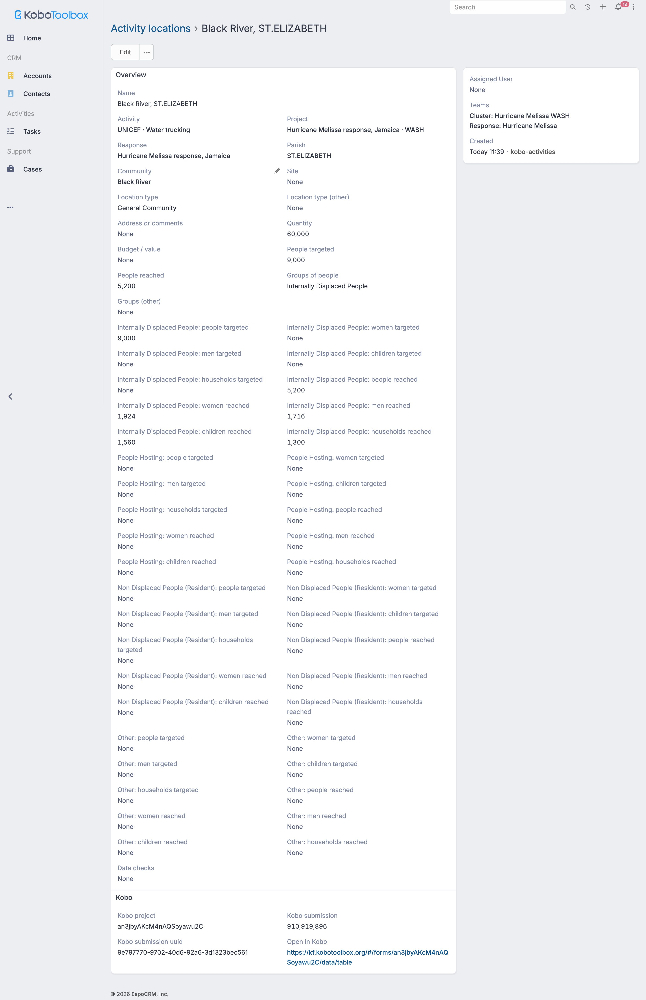
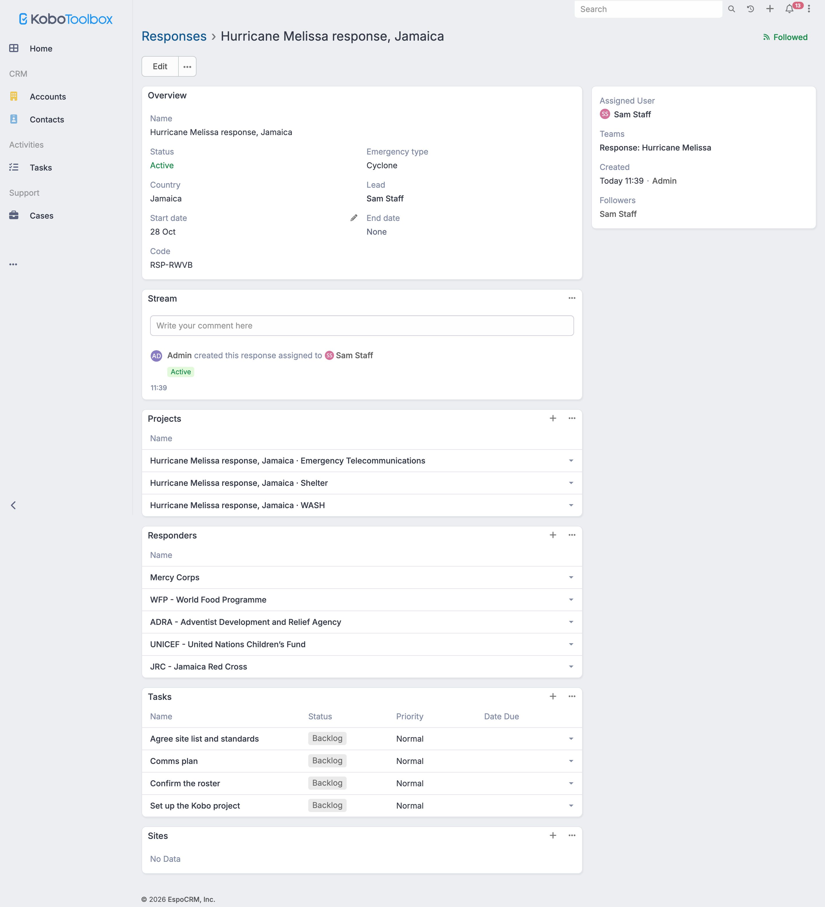

The form, and its codes
The activity report is made from the Hurricane Melissa 5W form (version 1.9) by kobo/forms/melissa.py: the same questions, notes, checks and codes, so its submissions fit EspoCRM as the Melissa form's do. Three things change:
- the response is picked from EspoCRM's list;
- the organisations, and the parishes and communities, are EspoCRM's lists on the form (
organisations.csv,areas.csv), filtered as the Melissa form filters them: organisations by type, communities by parish; - a community can name a registered site, by its site code.
EspoCRM uses the form's own codes: its 13 sectors (EMERGENCY_TELECOMS, WASH, SHELTER…), 84 activity types, statuses, resource types and units, location types and groups of people. A cluster project's sector is one of them.
Organisations
The Organisations list is the Melissa form's 137, each with its ORG_ code and type. Everyone can read it; the IM team keeps it.
- An organisation not in the list picks Other and types its name. Its report is kept, and the response's lead gets a task: Add to the organisations list: …
- An organisation can also register for a response with the registration form: the organisation (from the list), the sectors it works in, its focal point. Registering again updates the same record. A registration is in the teams of the response's projects in those sectors, so each cluster sees the organisations working in it.




Activities and communities
A report is an Activity: its lead and implementing organisation (the lead, unless another is named), sector, activity type and title, status, resource type and unit, dates. It goes into the response's project for its sector.
The form's Figures by community section is repeated, once for each community. Each one is an Activity location: the parish and community (by P-code), the site if it's a registered one, the location type, quantity and budget, people targeted and reached, and by group (displaced, hosting, non-displaced, other) the people, women, men, children and households, targeted and reached. The activity keeps the totals of its locations: communities, people, quantity, budget.
The form's focal points are Focal points on the activity. A report from the field becomes these records within a minute; one with a community EspoCRM doesn't know is kept with the communities it does, and the bridge records which row it couldn't place.






Who sees what
- An activity, its locations and focal points are in its sector's project's team, and the response's: the cluster's people see their sector's 5W, the coordinators see all of it.
- An activity in a sector the response has no project for is in the response's team only.
- Cluster Viewers read activities and locations but not focal points, which are people's contact details.
- A Cluster Partner can report an activity in their project, and edit their own.


Follow-up: organisations that haven't reported
The agent 5W: no report runs every morning at 06:00 (UTC), without a model. For each registered organisation that hasn't reported an activity for a week, or never has a week after registering, it makes a task for the response's lead: No 5W report from …, about that organisation (on its Tasks panel), with a note on its page.
- One task at a time: while it's open, the next mornings only note that it still is.
- Once the task is done, a further week of silence makes a new one.
- An organisation marked Inactive isn't followed up.
Like every agent, it starts in dry run: switch it to Active on its page (Agents).
Data checks
Activities and their locations carry Data checks: flags on what looks wrong, set as the figures arrive and gone when they're fixed. A report is never refused for them: it's kept, then fixed or explained in a note.
| On | Flag |
|---|---|
| a location | More reached than targeted |
| a location | The groups add up to more than the total reached |
| a location | A group's women, men and children don't add up to its people |
| an activity | No community given |
| an activity | Completed, nobody reached |
| an activity | Completed, but ends in the future |
Filter the Activities or Activity locations list by Data checks to see what needs a look.
Short codes
Responses, projects, registrations, activities, tasks and applications have a short code (RSP-7K3Q, PRJ-…, REG-…, ACT-…): easy to say on a call, found by the list's search box, and the names Kobo lists use for their choices. EspoCRM gives them; they can't be changed. Sites keep their site code, areas their P-code.
Limits
- The areas list (789 parishes and communities) goes to every phone with the form.
- An organisation's report isn't checked against its registration: the list is what it picks from, registration is optional.
- Charts, maps and the 5W's tables are dashboards: see Dashboards.